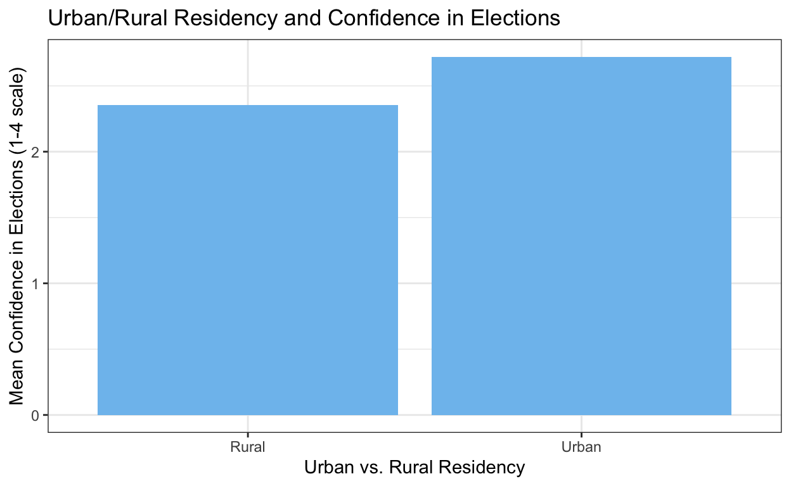
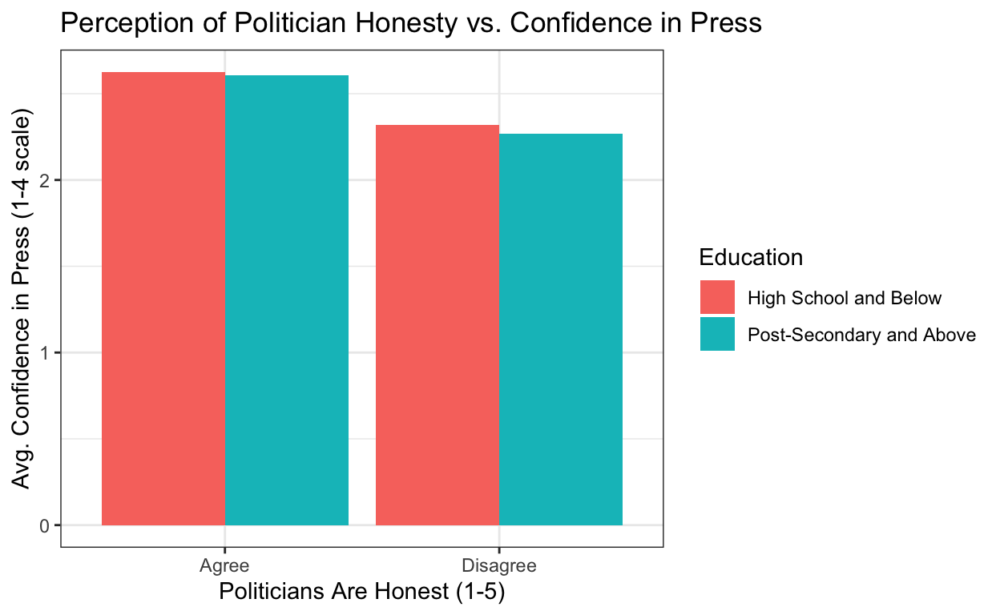

Data Visualization Part 2
Last week, we learned how to visualize data using
ggplot2. Importantly, we also learned that in order to
properly visualize data, it is often necessary to first summarize that
data using dplyr. In this tutorial, we will discuss
necessary steps to set yourself up to create good data visualizations.
We will then practice creating a visualization using data from the World
Values Survey.
Steps to Good Visualizations
In order to create a good data visualization – regardless of whether that is a bar graph, a scatterplot, or whatever you wish! – it is important to be organized and intentional in how you approach its creation. Here, we’re going to break down data visualization into six straightforward steps which will set you up to successfully illustrate relationships of interest.
To help with this, we will walk through an example. In the following section, you will then practice on your own.
1) Decide what relationship you want to illustrate
Before anything, you need to know what you want to visualize. What is the relationship of interest? What question are you hoping to answer?
For this example, we are interested in answering the following question: Do people who live in urban vs. rural areas have different levels of trust in elections?
2) Determine what variables are necessary for you to illustrate that relationship
Now that we have our question figured out, we need to determine what data and which variables we can use to answer the question. In this case, we are going to use data from the World Values Survey. We decide to use this data because we know that it has variables which will allow us to answer our key question.
Let’s check out the data world_values.
summary(world_values)## pol_honest conf_press edu urban_rural
## Min. :1.00 Min. :1.000 Min. :0.000 Min. :1.000
## 1st Qu.:2.00 1st Qu.:2.000 1st Qu.:2.000 1st Qu.:1.000
## Median :3.00 Median :2.000 Median :3.000 Median :1.000
## Mean :2.76 Mean :2.276 Mean :3.555 Mean :1.313
## 3rd Qu.:4.00 3rd Qu.:3.000 3rd Qu.:5.000 3rd Qu.:2.000
## Max. :5.00 Max. :4.000 Max. :8.000 Max. :2.000
## NA's :78804 NA's :2118 NA's :1012 NA's :37
## conf_election
## Min. :1.000
## 1st Qu.:2.000
## Median :2.000
## Mean :2.386
## 3rd Qu.:3.000
## Max. :4.000
## NA's :3740Within the data set, we can see that there are two variables which
should be of use to us. urban_rural is a variable which
captures whether or not an individual lives in an urban vs. rural area.
conf_election is a variable which captures respondents’
levels of trust in elections. These variables are coded as follows:
urban_rural: 1 == Urban, 2 == Ruralconf_election: A scale from 1-4, where 1 == none at all and 4 == a great deal
3) Sketch out (yes, with pen and paper!) what you want the visualization to look like
Now that we know what variables we have, it is useful to
literally sketch out what we are interested in visualizing. In
this case, since we have one categorical variable
(urban_rural) and one continuous variable
(conf_election) we’ll go with a bar graph. We create a
little mock sketch (see below) of how we want this to look.
Notice that we have two categories on our x-axis (for urban and rural) and the y-axis corresponds to one value of trust for each group. This provides us useful information for our next step!
4) Determine how you need to summarize or transform your raw data to make that sketch come to life
Currently, our data is in its raw format. Prior to creating a visual, we need to perform the appropriate transformations or summarizations of the data to allow us to create a graph.
A useful way to begin is by considering how we want our data frame itself to look. Let’s consider the above sketch. It implies we need to have two variables (or two columns) in our data set. One should capture urban vs. rural residence, and the second should capture average confidence in elections.
Second, we need to consider how many observations (or rows) we need in our data set. In this case, we need two data points – an average of confidence in elections for urban citizens, and an average for rural citizens. This indicates to us that we need two rows of data
In all, this sounds like we need a data frame that has two columns and two rows. If we sketch it out, it should look like this:
| urban_rural | mean_conf |
|---|---|
| Rural | AVERAGE |
| Urban | AVERAGE |
So, how do we create this?
First, let’s consider our urban_rural
variable. It’s current values are not particularly straightforward to
follow. We need to first recode that variable so its values are more
informative. We will recode values of 1 to be “Urban”,
values of 2 to be “Rural” and leave any other values as
NA.
Second, we can now think about what we should do
with the conf_election variable. At this point, we
currently have about 95,000 respondents who each have reported a
different level of trust in elections. But, we are not really interested
in each of those individual responses, rather, we’re interested
in the mean level of confidence for the two groups (urban vs. rural). In
that case, our best approach here would be to determine what is the
average level of trust in elections across these two
groups.
5) Conduct necessary data summaries or transformations
First, let’s handle the urban_rural variable which we
discussed above.
#use ifelse() to recode urban_rural
world_values$urban_rural <- ifelse(world_values$urban_rural == 1, "Urban",
ifelse(world_values$urban_rural == 2, "Rural",
NA))Second, we can now summarize our data across the two groups of
interest (urban vs. rural residents). We can easily summarize our data
using dplyr, as we learned last week. In the below code,
dplyr is used to create a new data set, titled
plot_data1. The world_values data is
summarized to calculate the mean level of confidence in elections for
respondents who live in urban vs. rural areas.
plot_data1 <- world_values %>%
na.omit() %>%
select(urban_rural, conf_election) %>%
group_by(urban_rural) %>%
summarize(mean_conf = mean(conf_election, na.rm = T))
plot_data16) Visualize!
Now, we can plot! We will do so using the ggplot()
command. Above, we decided that a bar graph was the best way to
visualize this data. To create a bar graph, we will use the
geom_col() argument.
ggplot(plot_data1, aes(x = urban_rural, y = mean_conf)) +
geom_col()
A great start, but pretty basic! Let’s customize this a bit with more informative axes labels, a title, and a more appealing color scheme.
ggplot(plot_data1, aes(x = urban_rural, y = mean_conf)) +
geom_col(fill = "skyblue2") +
labs(x = "Urban vs. Rural Residency",
y = "Mean Confidence in Elections (1-4 scale)",
title = "Urban/Rural Residency and Confidence in Elections") +
theme_bw()
Now, it is your turn. In the next section, you will apply these six steps to creating your own data visualization from beginning to end.
Practice: Part 1
Your task is to create a data visualization to answer the following question: Do those who believe politicians are honest have higher levels of trust in the press? And does this relationship differ by education level?
Your key variables of interest are as follows:
conf_press: respondent confidence in the press (1-4 scale, 1 = none at all, 4 = a great deal)pol_honest: respondent’s response to the question “Most politicians are honest and truthful, do you agree or disagree?” (1-5 scale, 5 = agree strongly, 1 = disagree strongly)edu: respondent’s level of education, where:- 0.- Early childhood education/no education
- 1.- Primary education
- 2.- Lower secondary education
- 3.- Upper secondary education
- 4.- Post-secondary non-tertiary education
- 5.- Short-cycle tertiary education
- 6.- Bachelor or equivalent
- 7.- Master or equivalent
- 8.- Doctoral or equivalent
Before beginning, we’ll start off by summarizing the data again so you can get a look at it:
summary(world_values)## pol_honest conf_press edu urban_rural
## Min. :1.00 Min. :1.000 Min. :0.000 Length:94278
## 1st Qu.:2.00 1st Qu.:2.000 1st Qu.:2.000 Class :character
## Median :3.00 Median :2.000 Median :3.000 Mode :character
## Mean :2.76 Mean :2.276 Mean :3.555
## 3rd Qu.:4.00 3rd Qu.:3.000 3rd Qu.:5.000
## Max. :5.00 Max. :4.000 Max. :8.000
## NA's :78804 NA's :2118 NA's :1012
## conf_election
## Min. :1.000
## 1st Qu.:2.000
## Median :2.000
## Mean :2.386
## 3rd Qu.:3.000
## Max. :4.000
## NA's :3740There is no singular correct way to visualize this data, but we will walk through one way to do so here. Throughout this activity, we will be utilizing the six steps we just covered:
- Decide what relationship you want to illustrate
- Determine what variables are necessary for you to illustrate that relationship
- Sketch out what you want the visualization to look like
- Determine how you need to summarize or transform your raw data to make that sketch come to life
- Conduct necessary data summaries or transformations
- Visualize!
Let’s begin!
Step 1: Decide what relationship you want to illustrate
This has been decided for us - we want to answer the question Do those who believe politicians are honest have higher levels of trust in the press? And does this relationship differ by education level?
Step 2: Determine what variables are necessary for you to illustrate that relationship
We have already been provided with a data set which has three key
variables that will allow us to illustrate the relationship of interest.
These variables are conf_press, pol_honest,
and edu.
Step 3: Sketch out what you want the visualization to look like
On your own, with a pen and paper, sketch out how you might imagine this data visualization should look. Consider if the variables you are interested in are continuous or categorical. On the next page, you will be provided with a sketch which you will then use to inform your data visualization.
Practice: Part 2
Since we cannot see the sketch that you came up with, we will use the below sketch to dictate how we want to visualize our data moving forward.
Step 4: Determine how you need to summarize or transform your raw data to make that sketch come to life
So, how do we transform our data to make this visualization come to life? What do we need our data to look like?
On the x-axis, we have honesty, which is a 5-point scale. On the y-axis, we have average confidence. And then we are also interested in breaking this up by two groups of education levels (higher vs. lower levels of education). So, we will want two averages for each level of honest – 10 observations or rows! And then, we have three variables or columns. We can think about our data looking like this:
| pol_honest | edu | mean_conf |
|---|---|---|
| 1 | High | AVERAGE |
| 1 | Low | AVERAGE |
| 2 | High | AVERAGE |
| 2 | Low | AVERAGE |
| 3 | High | AVERAGE |
| 3 | Low | AVERAGE |
| 4 | High | AVERAGE |
| 4 | Low | AVERAGE |
| 5 | High | AVERAGE |
| 5 | Low | AVERAGE |
From looking at this sketch of the data, it seems we will need to do the following:
- Create a categorical variable for education
- Calculate average levels of confidence grouped by both education and ratings of politician honesty
Step 5: Conduct necessary data summaries or transformations
First, we’ll need to make our education variable categorical. Below,
create a new variable called ed_cat. This variable should
== “High School and Below” for all educational categories from 0-3, and
should == “Post-Secondary and Above” for all educational categories from
4-8. Make this variable into a factor variable.
#transformation edu to be ed_cat using ifelse()
world_values$ed_cat <- factor(ifelse(world_values$edu <= ___, ___,
ifelse(world_values$edu > ___, ___,
___)))
#check it out to make sure it worked
summary(___)#transformation edu to be ed_cat using ifelse()
world_values$ed_cat <- factor(ifelse(world_values$edu <= 3, "High School and Below",
ifelse(world_values$edu > 3, "Post-Secondary and Above",
NA)))
#check it out to make sure it worked
summary(world_values$ed_cat)Second, we will want to summarizing our data to calculate average levels of confidence grouped by both education and ratings of politician honesty.
To do so, we will use dplyr. Below, create a new data
frame called plot_data that summarizes the
world_values data. You will want to create a new variable
mean_conf with the average level of confidence in the
press, grouped by both pol_honest and ed_cat.
The below code should get you started!
___ <- ___ %>% #create new df
___() %>% # remove NA values
group_by(___, ___) %>% # group by for summarizing
summarize(___ = mean(___))
#return your data
___plot_data <- world_values %>% #create new df
na.omit() %>% # remove NA values
group_by(pol_honest, ed_cat) %>% # group by for summarizing
summarize(mean_conf = mean(conf_press))
#return your data
plot_dataStep 6: Visualize!
Now that we have our data properly summarized, we can create a
visualization using ggplot2. We’ll first begin with the
basics, and then work on getting the figure to look aesthetically
pleasing.
ggplot(___, aes(x = ___, y = ___, color = ___)) + # begin plot with x, y axis and color
___ + #include dots
___ #include linesggplot(plot_data, aes(x = pol_honest, y = mean_conf, color = ed_cat)) + # begin plot with
# x and y axis, also specify color for education
geom_point() + #include dots
geom_line() #include lineGreat. Now that we have the basics established, let’s work on making this look a little more visually pleasing. Below, add the following elements to the plot:
- A black and white theme
- X and y axes labels
- A title
- A label for the legend (color)
ggplot(plot_data, aes(x = pol_honest, y = mean_conf, color = ed_cat)) + # begin plot with
# x and y axis, also specify color for education
geom_point() + #include dots
geom_line() + #include line
___ + # black and white theme
labs(___, # x axis label
___, # y axis label
___, #title
___) #legend titleggplot(plot_data, aes(x = pol_honest, y = mean_conf, color = ed_cat)) + # begin plot with
# x and y axis, also specify color for education
geom_point() + #include dots
geom_line() + #include line
theme_bw() + # black and white theme
labs(x = "Politicians Are Honest (1-5)", # x axis label
y = "Avg. Confidence in Press (1-4 scale)", # y axis label
title = "Perception of Politician Honesty vs. Confidence in Press", #title
color = "Education") #legend titleAdditional Options
In addition, there are other ways that we could have plotted the data. As mentioned before, there is often not only one correct way to visualize data. Below, we have included some additional plots that we could have created, based on our initial sketch and goals for our end visualization.
Alternative 1
Here, instead of using colors to distinguish between levels of education, we do something called “faceting”, which separates the figure into two panels.
world_values %>%
na.omit() %>% # remove NA values
group_by(pol_honest, ed_cat) %>% # group by for summarizing
summarize(mean_conf = mean(conf_press)) %>% # calculate mean level of confidence
ggplot(aes(x = pol_honest, y = mean_conf)) + # begin plot with x and y axis
geom_point() + #include dots
geom_line() + #include line
facet_wrap(~ed_cat) + #facet wrap by education
theme_bw() + # black and white theme
labs(x = "Politicians Are Honest (1-5)", # x axis label
y = "Avg. Confidence in Press (1-4 scale)", # y axis label
title = "Perception of Politician Honesty vs. Confidence in Press", #title
color = "Education") #legend title## `summarise()` has grouped output by 'pol_honest'. You can override using the
## `.groups` argument.
Alternative 2
Here, we decided to also make our pol_honest variable
categorical. Since one of our main variables is now categorical, we went
with a bar graph! We calculated the average confidence in the press by
education level, with different colored bars for each category of
education.
#transformation pol_honest to be honest_cat using ifelse()
world_values$honest_cat <- ifelse(world_values$pol_honest <= 3, "Disagree",
ifelse(world_values$pol_honest > 3, "Agree",
NA))
world_values %>%
na.omit() %>% #remove NAs
group_by(honest_cat, ed_cat) %>% #group by for summarizing
summarize(mean_conf = mean(conf_press)) %>% #calculate mean confidence
ggplot(aes(x = honest_cat, y = mean_conf, fill = ed_cat)) + # specify our
# x and y axes, and also that we will have different fill colors by edu
geom_col(position = "dodge") + #bar graph, with "dodged" bars (side by side)
theme_bw() + # black and white theme
labs(x = "Politicians Are Honest (1-5)", # x axis label
y = "Avg. Confidence in Press (1-4 scale)", # y axis label
title = "Perception of Politician Honesty vs. Confidence in Press", #title
fill = "Education") #legend title## `summarise()` has grouped output by 'honest_cat'. You can override using the
## `.groups` argument.